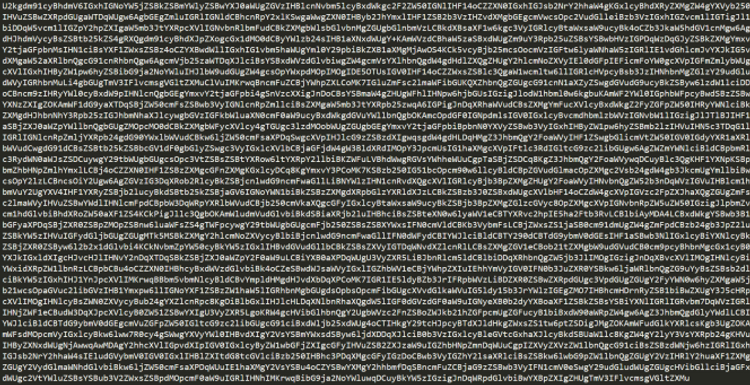

BLOCKCHAIN
Histoire de la blockchain
La toute première blockchain date de 1995 et elle a été imprimée sur papier. Mais ce n’est pas elle qui nous intéresse aujourd’hui.

Le Monde
Celle qui nous intéresse aujourd’hui et la blockchain autour du Bitcoin, elle a été créée afin de permettre l’usage du Bitcoin. Cette blockchain-là, a été créée en 2008 par un inconnu qui utilise comme pseudonyme Satoshi Nakamoto.Mais cette technologie peut etre utiliser dans d'autres domaines comme les NFT
Pour en Savoir plus :
Jounal du coin
Journal du net
Comment fonctionne la blockchain ?
D’abord la blockchain et une base de données dans laquelle on retrouve l’historique de tous les échanges qui ont été effectués depuis son ouverture. Cette base de données est partagée par tous ses utilisateurs, sans qu’il y ait le moindre intermédiaire. Ce qui permet au BTC d’être une monnaie décentraliser.
Pour continuer, la blockchain n’est pas utilisée que pour le bitcoin mais il est également utilisé pour différente raison, il est utilisé dans le crypto monnaie (est une monnaie numérique émise de pair à pair, sans nécessité de banque centrale), les NFT (acronyme de « non-fungible token », acronyme de « non-fungible token »). Mais ses utilisations ne se limitent pas aux crypto-monnaies. De nombreux domaines et secteurs d'activités, commerciaux ou non commerciaux, publics ou privés, utilisent déjà la blockchain ou envisagent de le faire dans les années à venir.